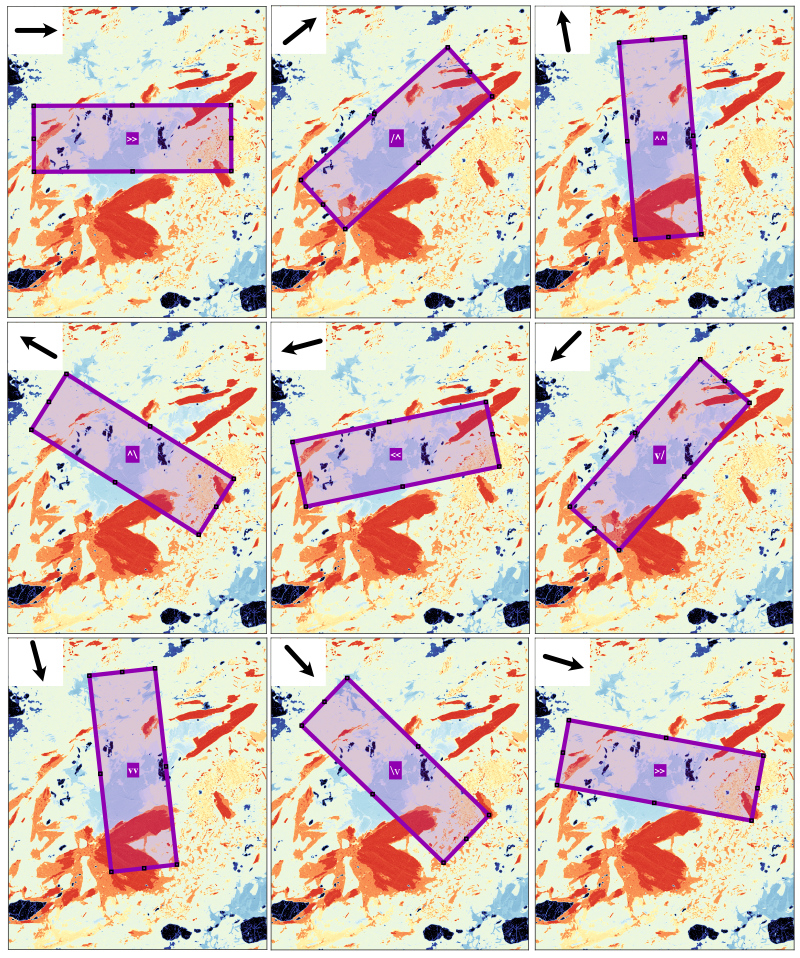

Help file version 14.01.2024 by M. Tedeschi & P. Lanari
Table of content
Circle
Area (Polygon)
Transect
Strip
This help file contains a description of the Sampling Tools. These tools are available at any stage of the data procedure and apply to the map shown in the main figure.
The following sampling functions are available from the Sampling menu or from the Sampling section of the live output display, located below the live histogram:
The individual sampling functions are described below.
Once a ROI has been selected, the results are displayed in the Sampling Viewer to the right of the main window. Data can be saved using the tools available in the Sampling menu under 'Save Results'. The 'Single Map' option saves data for the map selected from the primary menu, while the 'Multiple Map' option saves all element maps available in the selected data category. Data is automatically saved to an 'Exported-Sampling' folder in the working directory.
Select Sampling > Circle from the main menu and draw a circle on the map by clicking on a location, holding the mouse down and dragging over an area. Note that a crosshair cursor becomes available when the mouse pointer is over the map and the Sampling option is enabled.
Once you have drawn the circle, click and hold one of the four filled dots inside the circle to change its size. Inside the circle a cross cursor can be used to move the position of the circle. If it is not possible to edit or move the ROI, select XMapTools, press ctr (control) and try editing the ROI again.
The result of the data extraction is shown by the green bar in the graph at the top right of the main window and the corresponding numbers immediately below. A histogram is also plotted using all the pixel data contained within the ROI.

Figure 1: Example sampling of an intensity map (Ca) using the circle shape. Note that in this example, the average value of the selected pixels (Nb = 774) is 1028 ± 35.24 (stdev).
Select Sampling > Area (Polygon) from the main menu and draw a polygon on the map by clicking on several points. Click on the first point to close the polygon (a circle cursor appears).
The polygon shape can be edited. If it is not possible to edit or move the ROI, select XMapTools, press ctr (control) and try editing the ROI again.

Figure 2: Example sampling of an intensity map (Ca) using the polygon shape. Note that in this example, the average value of the selected pixels (Nb = 774) is 999.8 ± 63.9 (stdev), but two plagioclase compositions are visible on the histogram (at 900 and 1030 counts).
Select Sampling > Transect from the main menu and draw a polygon on the map by clicking on several positions. Right-click to complete the selection. You must select at least two positions to obtain a valid transect.
The resulting profile is shown in the live display in the category sampling (Fig. 3).
The transect position can be edited and the plot will be updated automatically. Note that changing the colour bar boundaries will change the profile as the colours from the colour bar are used to plot the points. If it is not possible to edit or move the ROI, select XMapTools, press ctr (control) and try editing the ROI again.

Figure 3: Example of sampling an intensity map (Ca) using a transect starting at the point located to the left.
This tool is used to extract the mean and median profile from a rectangular strip, using the composition of each transect. For a given pixel on the central transect, the value is calculated as the mean and median of the pixel compositions perpendicular to the reference transect.
Select Sampling > Strip from the main menu and draw a horizontal rectangle on the map by clicking on the corner position (top left), holding the mouse down and dragging over an area. Note that a crosshair cursor becomes available when the mouse pointer is over the map and the Sampling option is enabled.
To move the rectangle, position the cursor in the centre of the rectangle, left-click, hold and drag, and drop it into the new position.
Note: The retangle must be drawn with its extension horizontal. However, it can be rotated later by positioning the cursor on the perimeter of the rectangle, near one of its edges, and then activating the rotation cursor.
Once the rectangle has been created (or edited), the plots in the Live Display Sampling category are updated. Two plots are available: (top) two curves, in red the median and in blue the mean; (bottom) all profiles used to generate the above plot are plotted in grey.
.

Figure 4: Example sampling of an intensity map (Ca) using a strip from bottom left to top right.
The orientation of the strip is shown in Figure 5.

Figure 5: Orientation of the sampling strip.